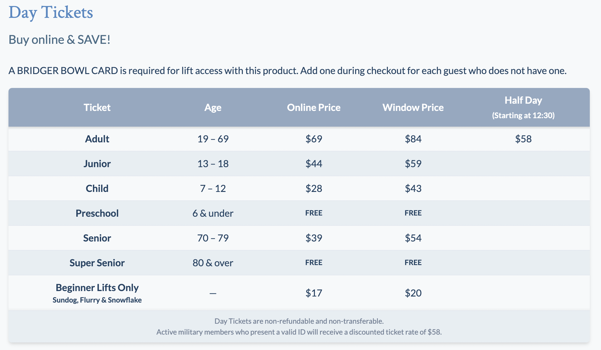

Bridger Bowl, despite living in the shadow of Big Sky is a very solid mountain, with arguably the best terrain for Montana mountains without the acreage seen with Whitefish and Big Sky. This mountain offers 8 chairlifts with 75 runs only within the boundaries. The distinguishable part of Bridger Bowl is the skiing that is offered outside of the boundaries that are only offered to skiers with avalanche beacons with a chair and a towrope up above. This mountain is a must for advanced skiers but still offers a few chairlifts for beginners.
The positive aspect of the location of Bridger Bowl is the close proximity to Bozeman since that comes with the benefits of lots of Montana State research for better conditions and the super quick access for the city as it is only a little more than 20 minutes the center. For that reason, two shuttles are provided for skiers coming from town. The best part, in my opinion, is the partnership with a beer company known as Montucky. They do a raffle for a ski designed after the beer and cheaper prices with the local growth in mind.
Bridger Bowl is arguably the best bang for your buck. Being significantly cheaper than Whitefish and Big Sky, while offering similar terrain it is definitely hard to beat. For an extra 10 dollars, they offer a card that just sits in your pocket without having to be scanned which is the only one in Montana.
